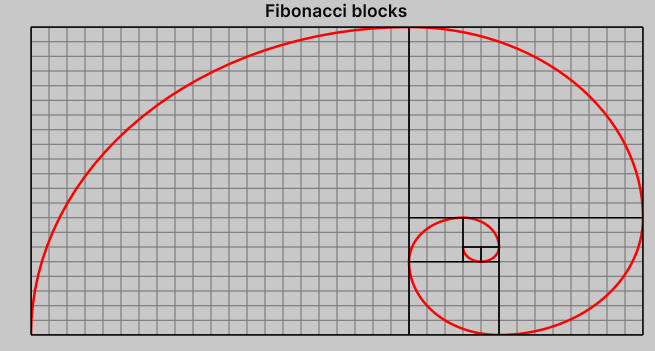

Fibonacci blocks demo
Below is a simple demo demonstrating how to plot Fibonacci blocks using PlotWithLines and PlotWithBoxes.

var graph = new Graph
{
XAxis = { Tics = Tics.Step(-1000, 1, 1000, formatter: _ => "") },
YAxis = { Tics = Tics.Step(-1000, 1, 1000, formatter: _ => "") },
Theme = { Grid = { DashPattern = new float[] { 1 } },
Tics = { Direction = TicsDirection.None } },
style = { height = 300 },
Title = "Fibonacci blocks"
};
var boxes = new List<AABB>();
var (f0, f1) = (1f, 1f);
var bounds = new AABB(0, 1);
boxes.Add(bounds);
for (int i = 1; i < 8; i++)
{
var o = math.float2(f1, 0);
var (p0, p1) = (i & 3) switch
{
0 => (bounds[0] - o.yx, bounds[0] + o.xy),
1 => (bounds[1], bounds[2] + o.xy),
2 => (bounds[3], bounds[3] + o.xx),
3 => (bounds[0] - o.xy, bounds[0] + o.yx),
_ => throw new(),
};
var box = AABB.Construct(p0, p1);
boxes.Add(box);
bounds = bounds.Union(box);
(f0, f1) = (f1, f0 + f1);
}
var spiral = new List<float2>();
for (var i = 0; i < boxes.Count; i++)
{
var b = boxes[i];
var r = b.Max.x - b.Min.x;
var center = b[((i + 2) & 3)];
var phi0 = 0.5f * math.PI * ((i + 2) & 3);
const int N = 32;
for (var j = 0; j <= N; j++)
{
var phi = phi0 + 0.5f * math.PI * j / N;
math.sincos(phi, out var s, out var c);
spiral.Add(center + r * math.float2(c, s));
}
}
graph.PlotWithLines(spiral, theme: new() { LineWidth = 2 });
graph.PlotWithBoxes(boxes, theme: new()
{
LineColor = Color.black,
FillColor = new Color(),
});